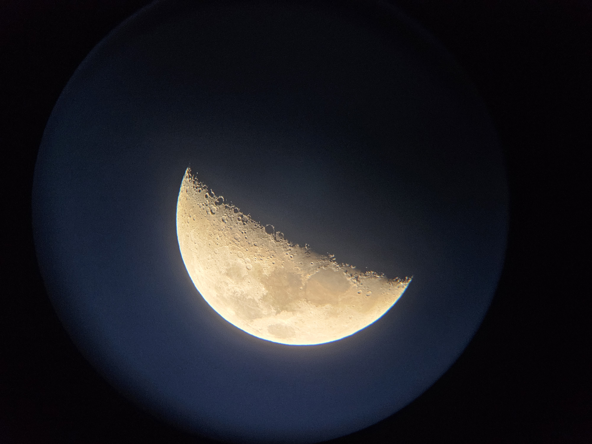
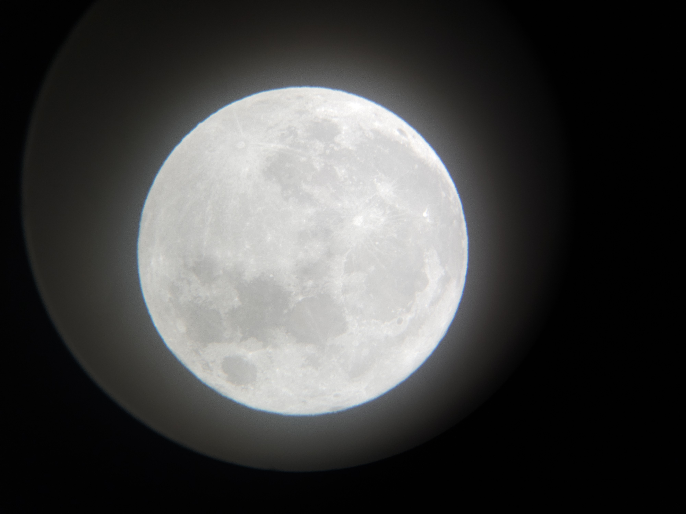
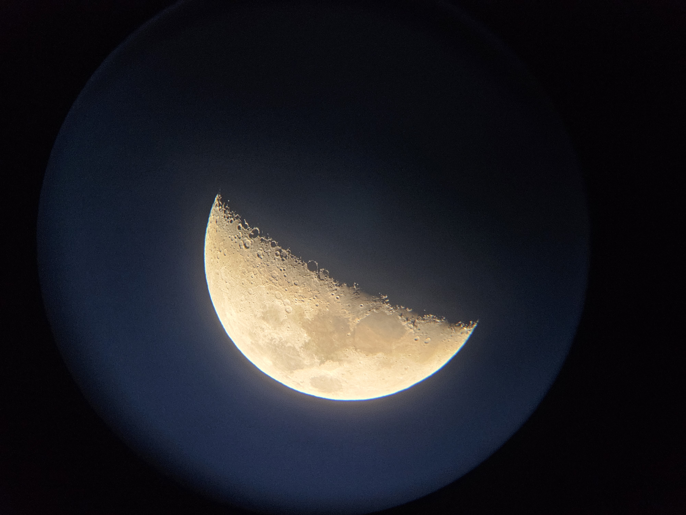
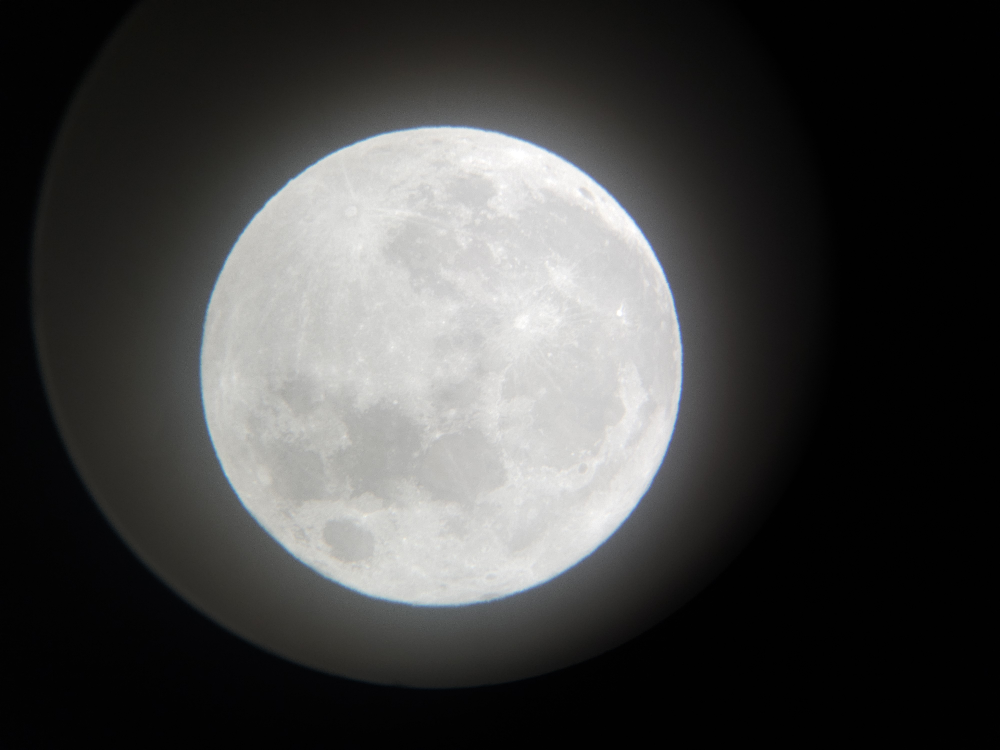
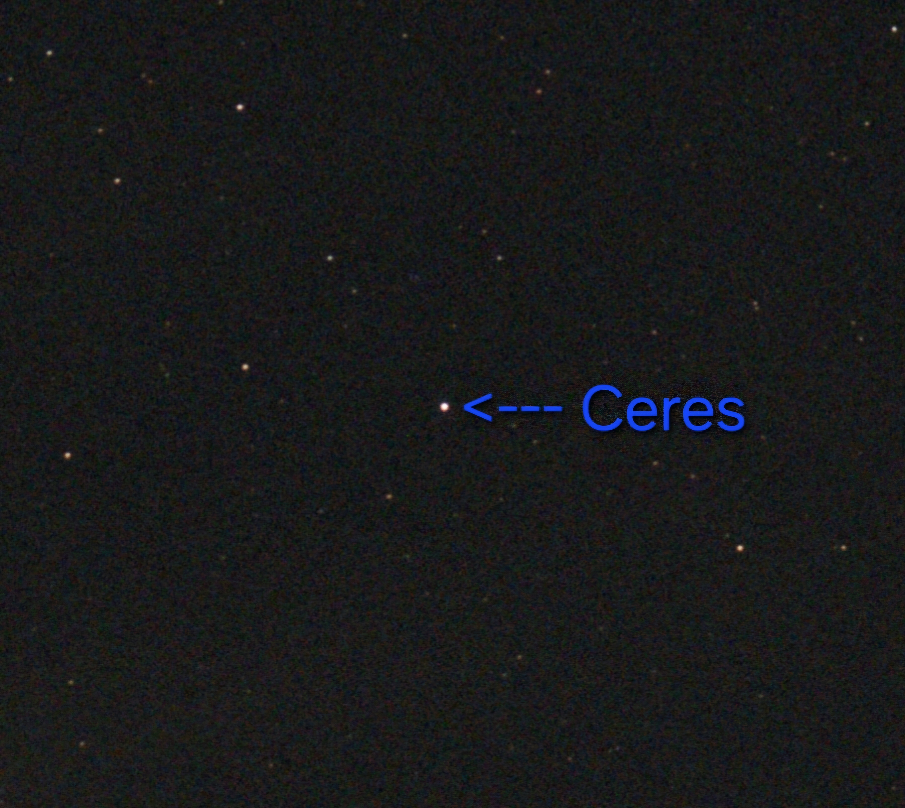
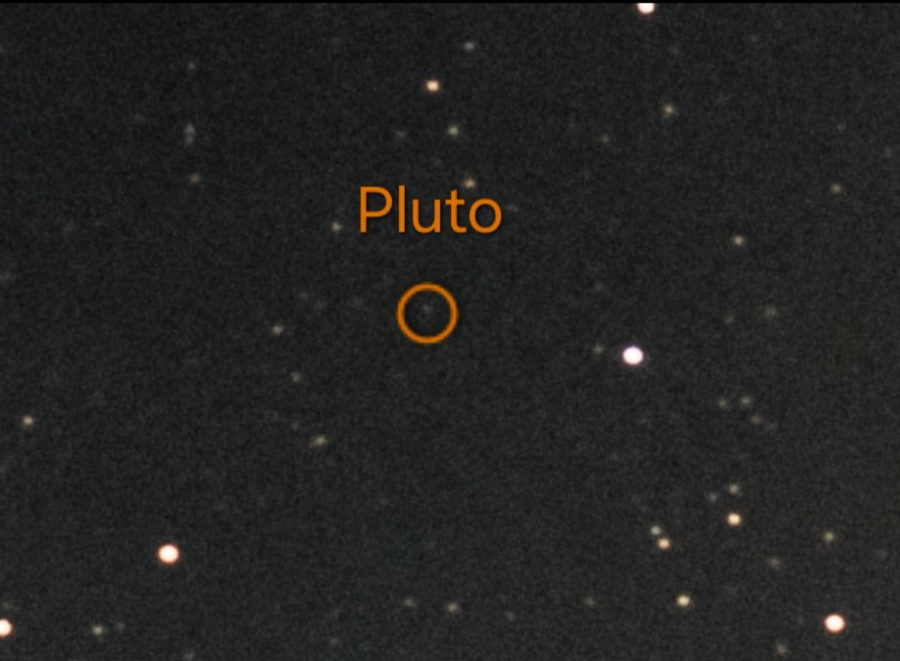
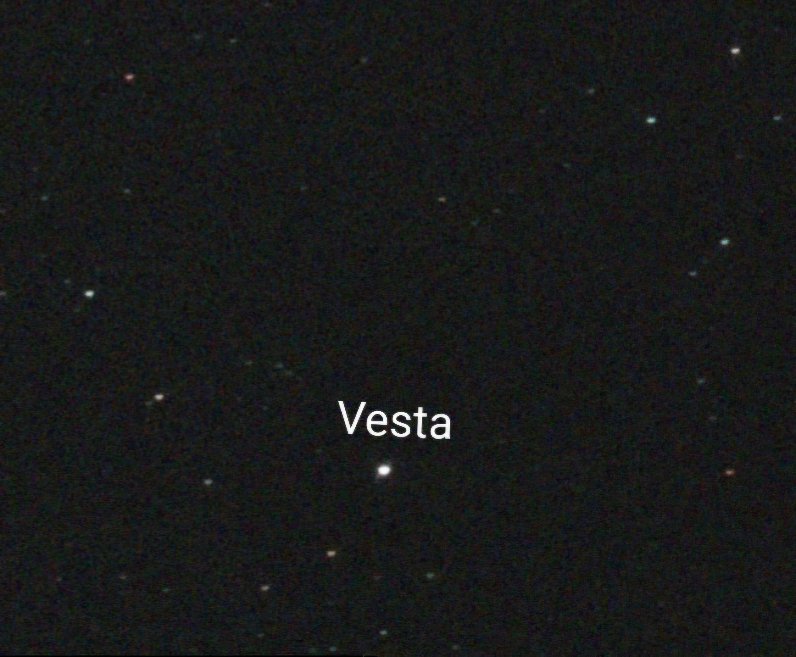
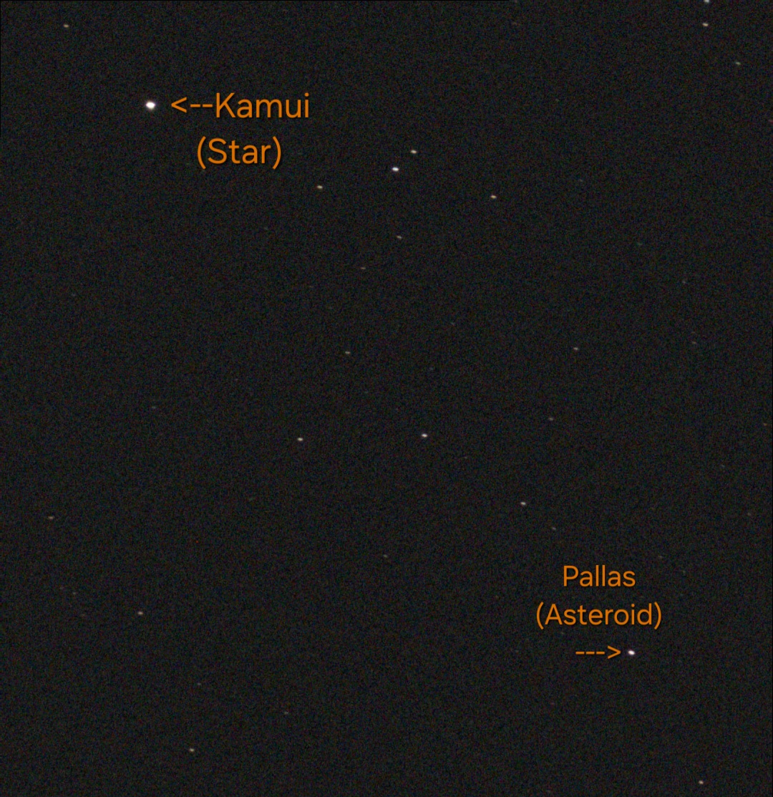

Our Moon
 



Our Moon is our planet's long time friend and everyone has seen it in their
lives at least a few times. Nothing beats watching it move in the sky, whether
day or night and with or without a telescope. Its changing shape yet simplicity
makes it ironically one of the few exciting constants in all our lives, making it something
we often take for granted when it's often seen as a dull rock in the sky.
Comet 12P/Pons-Brooks

This comet passed by us earlier this year and it didn't disappoint. Comets are
large chunks of dust and ice that come from the outer edges of our soler system. This
one in particular comes around every 71 years for that very reason, making it feel lucky to have the chance to
both see it and share photos of it to those who couldn't see it.
Dwarf Planets & Asteroids




Often the most underrated bodies in our own solar system, here are the dwarf planets
Ceres and Pluto,
alongside the massive asteroids Vesta and Pallas. Yes, they're just dots
in these pictures as well as viewing for the fact that they are tiny, with all four
being the size of Australia or smaller. Regardless, they are still interesting parts to see, capture, and appreciate, at least for me. These are often the farthest and dimmest
objects you could see of our solar system from NYC, so it's best to appreciate them too if given the chance to view them.